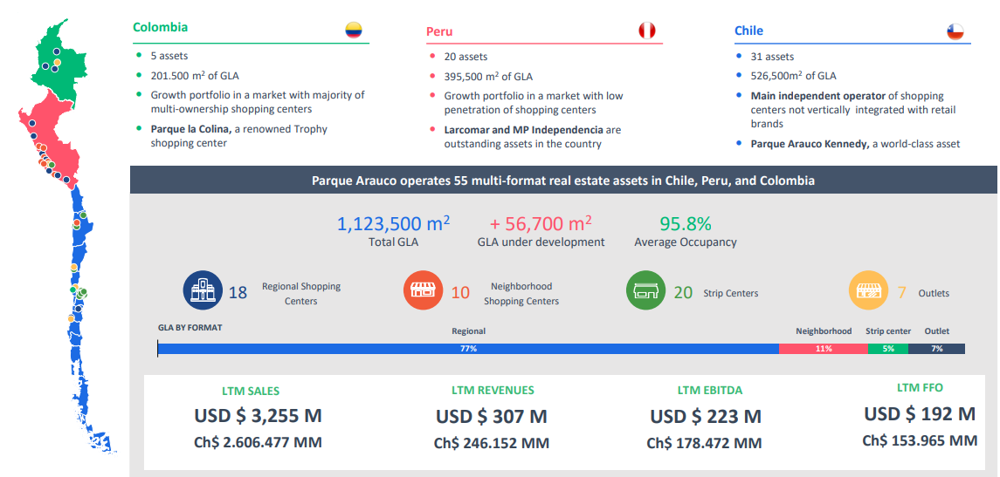
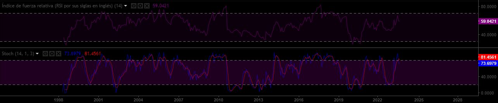
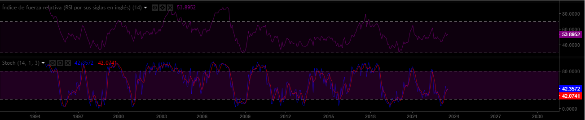

Plantilla Proyecto
Descripción Activo y Contexto (Hito 1)
Fecha de entrega: Jueves 28 de Septiembre 23:59.
Definición
Parque Arauco S.A. es una empresa inmobiliaria chilena, centrada principalmente en los centros comerciales (mall). con presencia en Colombia y Perú. en la siguiente imagen se muestra un resumen de la presencia de dichos países y sus métricas financieras.

En una investigación del artículo:“Neoliberal Lakeside Residentialism: Real Estate Developmente and the Sustainable Utopia in Environmentally Fragile Áreas” explica el papel central que jugó el desarrollo inmobiliario en dos ciudades de Chile, siendo esto importante para el consumo y turismo en esas ciudades.
El activo Parque Arauco tiene un valor promedio para el intervalo igual a 830
Motivación
Parque Arauco S.A., empresa que se destaca en el rubro inmobiliario y tiendas comerciales en Chile, es sin duda un activo que merece de toda su atención, ¿las razones? A continuación, se presentan y como están son relevante para los mercados financieros en Chile.
La expansión y la diversificación de Parque Arauco, es continua y va en aumento.
Este activo tiene un papel importante en el desarrollo económico del país, ya que en general 2/3 del pib en los países es por consumo, y Parque Arauco incentiva esto, el consumo.
Además, los corredores de Bolsa en Bci y BICE en su informe mensual comentan sobre parque Arauco en el siguiente link publicado el 21 de julio 2023
fuente: ( https://www.df.cl/empresas/retail/parque-arauco-reporta-aumento-en-sus-ingresos-impulsado-por-el)
Contexto
En el gráfico “Parque Arauco S.A.” se muestra el precio de la acción de Parque Arauco S.A., en el largo plazo se puede apreciar una tendencia alcista en las últimas dos décadas, con procesos correctivos en el año 2008, en septiembre de 2010 hasta noviembre 2011, el año 2013 también presentó un proceso correctivo, y la pandemia en 2020. En los últimos años, el precio de la acción ha tenido un rebote alcista, alcanzando máximos de febrero 2021, pero sigue en una tendencia bajista en el corto plazo desde 2020.
Lo anterior se respalda con el sentimiento del mercado en este activo, en la imagen adjunta se puede observar el sentimiento de los inversionistas de la acción en diario, semanal y mensual.
En el corto y mediano plazo (diario, semanal) , se puede apreciar un sentimiento mas bajista; en cambio, en el sentimiento más de largo plazo (mensual) se puede apreciar un sentimiento más de compra.
Imagen sentimiento DIARIO
imagen sentimiento SEMANAL
Imagen sentimiento MENSUAL
fuente: (https://es.investing.com/equities/parq-arauco)
Para entender más el movimiento tendencial de este activo y sus variaciones, en la siguiente imagen se adjunta las variaciones porcentuales del corto, mediano y largo plazo.
fuente: (https://es.investing.com/equities/parq-arauco-historical-data)
Análisis de Largo Plazo
Caracterización deuda (Aplicación cap. 15)
No se ha encontrado información detallada de las inversiones de Parque Arauco S.A. pero se ha encontrado en la página oficial de parque Arauco y del diario financiero lo siguiente:
Parque Arauco S.A. ha hecho su primera en emisión desde 2020 por UF 3 millones con una tasa 3,15 % anual y bajo una serie única con vencimiento en 2044, en la transacción contó link capital y BCI, alcanzando una demanda total 1,5 veces la oferta.
También hace inversiones a la expansión de sus centros comerciales, real estate.
Ofrece acciones preferentes a sus altos ejecutivos de 13250000 acciones, el precio por acción es UF 0.0536 fuente:https://www.df.cl/empresas/actualidad/parque-arauco-ofrece-opcion-preferente-de-acciones-a-ejecutivos
se encontró también inversiones en derivados para disminuir riesgos de tipo de cambio y tasa de interés.
Caracterización de emisiones históricas (Aplicación cap. 20)
El tipo de colocación es por intermediarios y los colocadores son BAN CHILE corredores de bolsa S.A., Itaú BBA corredor de bolsa limitada.
El proceso de emisión de acciones se detalla a continuación:
Primero el gerente general le envía un documento a SVS en él informa la emisión de acción.
Luego en esa carta se detalla la identificación del emisor y de la emisión
Luego se detalla los antecedentes generales de la sociedad
luego sus antecedentes financieros como el balance, estado de resultados, flujo de caja entre otros.
Esta información fue estudiada en https://www.cmfchile.cl/sitio/aplic/serdoc/ver_sgd.php?s567=bb0f2e9a94f7b79adc90a3b9e852284fVFdwQmVFNXFRWGxOUkVGNFQwUk5lVTFuUFQwPQ==&secuencia=-1&t=1695853034
Relación con activos derivados
El activo relacionado es Falabella, este fue elegido, ya que es una de las redes de comercialización omnicanal más grande del país. Además, Falabella en gran parte es una empresa que incentiva el consumo, teniendo este gran peso en el PIB de los países.
Adicionalmente, Falabella cotiza en el IPSA Santiago, y está en el top 3 de empresas con mayor capitalización en la bolsa de valores.
En los siguientes gráficos se aprecia el precio de la acción de Falabella y el gráfico de velas.
Por último, en la siguiente imagen se puede apreciar el movimiento de Falabella y Parque Arauco en conjunto, y se puede ver cómo estos dos están muy relacionados.
Imagen comparación Parque Arauco y Falabella.
Reporte grupal
Los pesos de los activos son:
Corto plazo
0.2 Parque Arauco S.A. (VENTA)
0,4 Banco Santander Chile (VENTA)
0,4 Copec (COMPRA)
Mediano Plazo
0.4 Parque Arauco S.A. (COMPRA)
0.2 Banco Santander Chile (COMPRA)
0.4 Copec (COMPRA)
Largo plazo
0.3 Parque Arauco S.A. (COMPRA)
0.2 Banco Santander Chile (COMPRA)
0.5 Copec (COMPRA)
Los argumentos de esta elección se basa en dos pilares fundamentales que son 1) análisis técnico y 2) análisis fundamental.
1) análisis técnico: También llamado price action, es un análisis de gráfico del activo que tiene como objetivo pronosticar el precio futuro de acciones, divisas, materias primas, índices, etc.
Se basa en herramientas de trading aplicadas al gráfico, cuando empleamos este análisis solo nos interesa el movimiento del precio y cómo se ha comportado en el pasado.
Las herramientas a utilizar son:
RSI: El RSI es un indicador que evalúa la fortaleza de la variación del precio, de tal forma, evalúa si el precio está sobre vendido o sobre comprado. Si está por encima de 70, este activo está sobre comprado y bajo 30 está sobre vendido.
Media móvil: Este indicador de tendencia representa el valor del precio de los últimos N periodos divido por este mismo número de periodos.
— Si el precio cierra por encima de la media móvil, es una señal de compra.
— Si el precio cierra por debajo de la media móvil, es una señal de venta.
Estocástico oscilador: Este indicador identifica reversiones de tendencias, cambios de precio y señales de compra y venta en los mercados. Con el oscilador Estocástico, los inversores determinan las señales de compra y venta y la dirección de la tendencia para definir sus estrategias de trading.
2) Análisis fundamental: El análisis fundamental en trading, es todo lo relacionado con noticias, información de la empresa (estado de resultados, proyecciones, ventas) o un gobierno (inflación, situación económica del país, etc.) que afecte al activo a estudiar.
Para este análisis, se buscó información en sitios webs de información financiera como diario financiero, Yahoo finance entre otros. También se buscó información de situación país debido a que son acciones chilenas y se buscó proyecciones de los activos hechos por expertos.
A continuación se muestra los gráficos de las acciones de Parque Arauco, Copec y Santander Chile.
Imagen gráfico Parque Arauco S.A.

En la siguiente imagen se puede apreciar una tendencia alcista en el largo plazo, pero el precio está sumergido en una tendencia bajista desde 2020.
El rectángulo azul muestra una zona de resistencia llamada como “techo” en el lenguaje trading, esta nomenclatura indica que cuando el precio llega a la zona, suele rebotar el precio con una alta probabilidad como se ve exactamente en el gráfico.
Los rectángulos más pequeños grises muestran los máximos decrecientes de esta tendencia bajista desde 2020, y vemos cómo el precio de parque arauco no ha superado el último máximo decreciente, es más, están casi al mismo nivel los dos últimos rectángulos grises.
Imagen indicadores Parque Arauco S.A.

En cuanto a los indicadores, el primero (RSI) se muestra neutral, no se presencia una señal de compra o venta en los niveles actuales de 57.7.
Para el indicador estocástico, se encuentra en niveles de sobreventa y con una señal de venta, ya que la línea azul está por debajo de línea roja y además, esta se encuentra en niveles sobre 70.
Imagen gráfico Banco Santander Chile.
En el gráfico, se puede apreciar una tendencia alcista en el largo plazo para Banco Santander Chile, y lo confirma el precio que está sobre la media móvil azul del gráfico, es más, ha roto la zona de resistencia mostrada en el rectángulo azul, pero el movimiento alcista, fue frenado por la zona de los últimos máximos históricos de la acción desde el cuerpo de la vela hasta su mecha que en precio es entre 44.97 y 47.38.
Imagen indicadores Banco Santander Chile.

En cuanto a los indicadores, el RSI está medianamente neutral en niveles de 58.
Para el indicador estocástico, está en niveles de sobre compra y la línea azul rompiendo la línea roja, lo que nos indica una señal de venta.
Imagen gráfico Copec.
En el gráfico, se muestra una tendencia alcista en el largo plazo y así lo refuerza el precio que está sobre la media móvil azul, pero una “bandera bajista” en los últimos años mostrado con la línea verde bajista del gráfico.
Además, en los rectángulos blancos, se aprecian las zonas de resistencia del gráfico.
Imagen indicadores Copec.

En cuanto al RSI, este se muestra neutral en niveles de 53.8, y el indicador estocástico, se muestra en zonas cercanas de sobre venta y con una señal de compra, ya que la línea azul está por encima de la línea roja perforando esta misma.
2) En cuanto al análisis fundamental, este estudio se basó en las discusiones e investigaciones de los trabajos individuales.